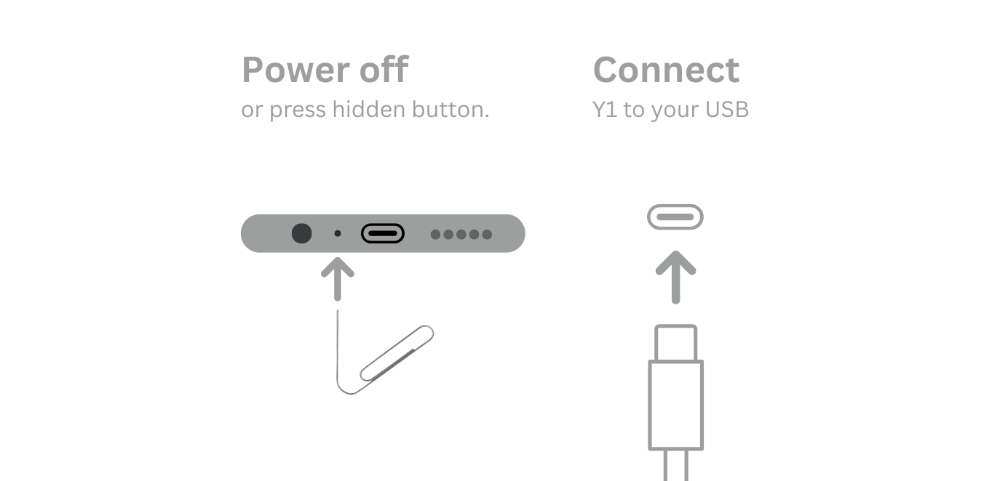

Fungerar med alla Innioasis och Timmkoo ljudspelare. Installera Innioasis Updater CE på din dator, välj din modell och den programvara du vill ha och följ sedan anvisningarna.
Innioasis Uppdaterare CE är appen som installerar officiella uppdateringar och communityprogramvara på din spelare. Den behåller din musik och inställningar, och den körs på Windows, macOS och Linux.
Windows
Ladda ner installationsprogrammet, kör det och starta om datorn när det är klart.
Om Windows stoppar dig från att köra appen eller inte startar den, öppna Inställningar, klicka på Sekretess och säkerhet → Windows Säkerhet → App- och webbläsarkontroll och stäng av Smart App Control. Smart App Control påverkar för närvarande populära applikationer som Epic Overlay Service (används av Fortnite) — Updater CE är säker och verifierad att använda. Windows startar inte appen? Hjälp
Om din Mac hindrar dig från att köra appen för första gången, öppna Systeminställningar, klicka på Sekretess och säkerhet, scrolla ner till Säkerhet och klicka på Öppet i alla fall. Du kan också Ctrl-klicka (eller högerklicka) på appen i Finder och välja Öppna.
Fungerar på Intel och Apple Silicon Mac med macOS Monterey och senare.
Linux
Ladda ner AppImage för Intel- och AMD-system, gör den körbar och kör den.
Du behöver din spelare, en USB datakabel som bär data (en laddningskabel kan inte installeras) och några minuter. Håll kabeln ansluten tills Updater CE säger att det är klart.
Välj din modell och programvara
Enhetsmodell: välj den modell som är tryckt på spelaren, Y1 eller Y2. Programvara gjord för en modell kan inte installeras på den andra.
Programvara och release: välj originalprogramvara, Rockbox, Solar, JJ Launcher, Inniclassic, Y2Player, eller Koensayr när den är listad för din modell och välj sedan en version. Stabil är det säkra valet.
Installera: klicka Installera / Återställ, stäng av spelaren helt och anslut endast USB-kabeln när Updater CE frågar.
Avsluta: låt spelaren och kabeln vara i fred tills meddelandet lyckades, koppla sedan bort och starta spelaren.
Y1 spelare som levererades med originalprogramvara före 2.0.0 behöver Enhet Type B. Alla andra behåller standard Type A.

Följ uppmaningen från Live Updater CE för din modell.
Går tillbaka till originalprogramvaran
Anpassad programvara är reversibel. I Updater CE, välj din modell, välj Originalprogramvara, välj en stabil version och kör sedan Installera / Återställ på samma sätt. Det finns inget att radera för hand.
Om en blixt slutar före USB-prompten, kontrollera först kabeln, plattformsinställningen och modellen. Se felsökning för fixar Y1 och Y2 återställningsguide för kraft- och hjulfel, och SP Flash Tool för avancerad återhämtning.
Programvaruguider efter modell
Öppna guiden för din modell och den programvara du valde.
Innioasis Y1
Programvara för Y1:
Innioasis Y2
Programvara för Y2:
Vilket verktyg ska jag använda?
Denna guide använder Innioasis Uppdaterare 2.5.1, även kallad Updater CE. Det skyddar dina låtar, videor och Bluetooth-parningar. Den talar om när uppdateringar är klara. Innioasis Universal Flash Tool torkar din spelare och behöver manuella steg. Jämför verktygen →
Windows startar inte appen? Lösning för smart appkontroll
Windows Defender SmartScreen eller Smart App Control kan blockera nyladdade community-applikationer innan signaturrykte sprids. Smart App Control påverkar för närvarande populära applikationer som Epic Overlay Service (används av Fortnite) — Updater CE är säker och verifierad att använda. Genom att stänga av Smart App Control kan Updater CE öppnas och köras normalt.
Öppna Inställningar på din Windows-dator (tryck på Win + I).
Klicka Sekretess & säkerhet i det vänstra sidofältet och klicka sedan Windows Security.
Klicka App- och webbläsarkontroll.
Under Smart appkontroll, klicka Smart App Control-inställningar.
Ställ omkopplaren på Av för att tillåta Updater CE att starta.
Laddas ner via Edge? Om Edge blockerar själva nedladdningen, klicka på knappen Fler alternativ (…) → Behåll → Visa mer → Behåll ändå.
Återaktivera Smart App Control senare: När du vill aktivera Smart App Control igen kan du återaktivera den via Windows-registret under HKEY_LOCAL_MACHINE\SYSTEM\CurrentControlSet\Control\CI\Policy genom att ställa in VerifiedAndReputablePolicyState till 1 (På) eller 2 (Utvärderingsläge) och omstart.
Windows startar inte appen? Hur man stänger av Smart App Control
Windows Defender SmartScreen eller Smart App Control kan blockera nyladdade community-applikationer innan signaturrykte sprids. Smart App Control påverkar för närvarande populära applikationer som Epic Overlay Service (används av Fortnite) — Updater CE är säker och verifierad att använda. Genom att stänga av Smart App Control kan Updater CE öppnas och köras normalt.
Öppna Inställningar på din Windows-dator (tryck på Win + I).
Klicka Sekretess & säkerhet i det vänstra sidofältet och klicka sedan Windows Security.
Klicka App- och webbläsarkontroll.
Under Smart appkontroll, klicka Smart App Control-inställningar.
Ställ omkopplaren på Av för att tillåta Updater CE att starta.
Blockerad av Edge? Om Microsoft Edge blockerar själva nedladdningen, klicka på knappen Fler alternativ (…) → Behåll → Visa mer → Behåll ändå.
Återaktivera Smart App Control senare: När du vill aktivera Smart App Control igen kan du återaktivera den via Windows-registret under HKEY_LOCAL_MACHINE\SYSTEM\CurrentControlSet\Control\CI\Policy genom att ställa in VerifiedAndReputablePolicyState till 1 (På) eller 2 (Utvärderingsläge) och omstart.
Var detta användbart?
Ditt svar hjälper till att förbättra den här guiden.